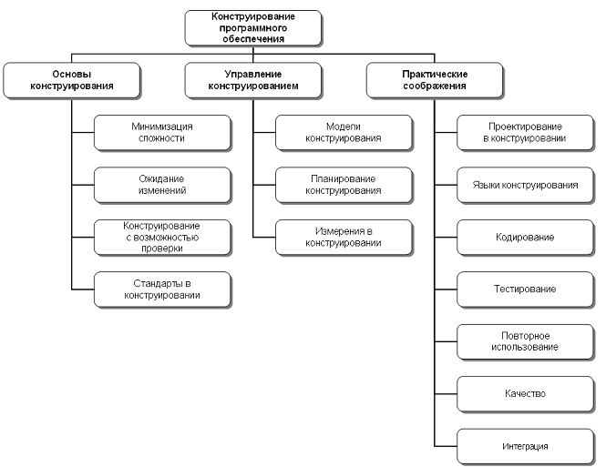

Введение
Термин конструирование программного обеспечения описывает детальное создание рабочей программной системы посредством комбинации кодирования, верификации (проверки), модульного тестирования, интеграционного тестирования и отладки.
Данная область знаний связана с другими областями. Наиболее сильная связь существует с проектированием (Software Design) и тестированием (Software Testing). Причиной этого является то, что сам по себе процесс конструирования программного обеспечения затрагивает важные аспекты деятельности по проектированию и тестированию. Кроме того, конструирование отталкивается от результатов проектирования, а тестирование (в любой своей форме) предполагает работу с результатами конструирования. Достаточно сложно определить границы между проектированием, конструированием и тестированием, так как все они связаны в единый комплекс процессов жизненного цикла и, в зависимости от выбранной модели жизненного цикла и применяемых методов (методологии), такое разделение может выглядеть по разному.
Хотя ряд операций по проектированию детального дизайна может происходить до стадии конструирования, большой объем такого рода проектных работ происходит параллельно с конструированием или как его часть. Это есть суть связи с областью знаний «Проектирование программного обеспечения».
В свою очередь, на протяжении всей деятельности по конструированию, инженеры используют модульное и интеграционное тестирование. Таким образом, данная область знаний связана с «Тестированием программного обеспечения».
В процессе конструирования обычно создается большая часть активов программного проекта — конфигурационных элементов. Поэтому в реальных проектах просто невозможно рассматривать деятельность по конструированию в отрыве от области знаний «Конфигурационного управления» (Software Configuration Management).
Так как конструирование невозможно без использования соответствующего инструментария и, вероятно, данная деятельность является наиболее инструментально-насыщенной, важную роль в конструировании играет область знаний «Инструменты и методы программной инженерии» (Software Engineering Tools and Methods).
Безусловно, вопросы обеспечения качества значимы для всех областей знаний и этапов жизненного цикла. В то же время, код является основным результирующим элементом программного проекта. Таким образом, явно напрашивается и присутствует связь обсуждаемых вопросов с областью знаний «Качество программного обеспечения» (Software Quality).
Из связанных дисциплин программной наиболее тесная и естественная связь данной области знаний существует с компьютерными науками. Именно в них, обычно, рассматриваются вопросы построения и использования алгоритмов и практик кодирования. Наконец, конструирование касается и управления проектами, причем, в той степени, насколько деятельность по управлению конструированием важна для достижения результатов конструирования.

Рис. 1. Область знаний «Конструирование программного обеспечения»